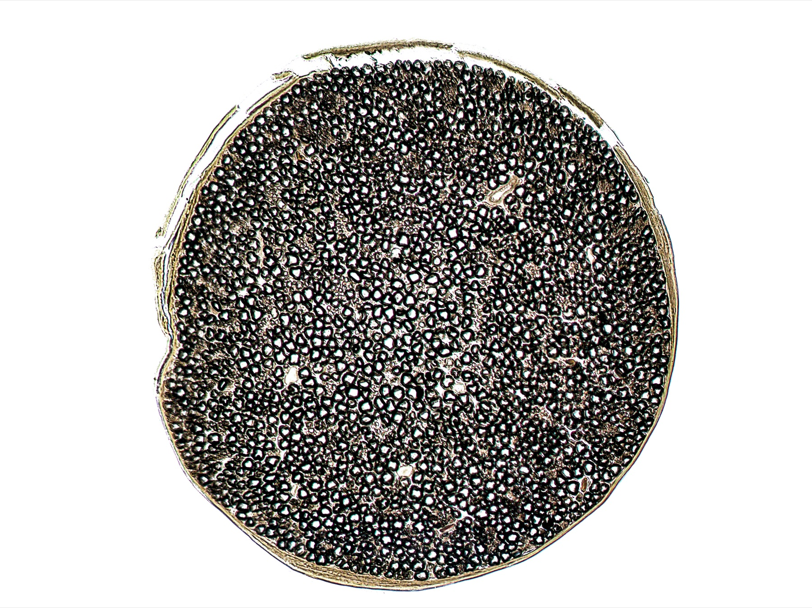

Por que o quadro é múltiplo: a mielina
Mielina intacta × mielina atacada — mesma doença, mil faces. O alvo é uma estrutura comum, não um neurônio só.
Corpo + axônio + mielina
No neurônio: corpo celular + axônio + ramificações distais. Para o axônio mandar o estímulo elétrico de forma correta, longa e com boa velocidade, ele é envolvido por uma bainha proteica: a bainha de mielina.
Velocidade do impulso
A bainha de mielina é fundamental para levar o estímulo do corpo até a ponta, para o próximo neurônio. A grande maioria dos neurônios do SNC é mielinizada (não todos, mas quase todos). Exemplos: fala, pensamento, comportamento, visão, coordenação, equilíbrio — “todo mundo tem mielina”.
Alvo comum, não um neurônio só
Por definição, todo neurônio central mielinizado pode ser atacado. A doença não é “contra o neurônio motor” nem “contra o neurônio da visão” isoladamente. O alvo é uma parte comum dos neurônios gerais: a bainha de mielina.
Por isso o quadro é amplo
Por isso o quadro clínico é amplo e múltiplo: pega estrutura comum aos neurônios. Esclerose múltipla é a grande doença desmielinizante do SNC.
Estrutura comum → quadro múltiplo
Atacar a mielina = atacar a infraestrutura comum → visão + força + sensitivo + equilíbrio no mesmo diagnóstico. Uma doença, múltiplas apresentações — daí o nome.

Malyshko Anastasia · Wikimedia Commons · CC BY 4.0 · fonte

A infraestrutura comum
Os anéis escuros são bainha de mielina envolvendo axônios — é essa estrutura que o sistema imune ataca. Perder mielina = perder velocidade; o quadro depende de onde a bainha somiu.
A manifestação mais clássica dessa lógica — neurite óptica.
Quiz
Q1. O alvo molecular/estrutural da EM é:
Gabarito: B. O alvo é a bainha de mielina do SNC — parte comum, não um neurônio isolado.
(A) não é “contra o neurônio motor”. (C) retina não é o alvo. (D) EM não pega SNP.
Por que se cai na A: achar que cada doença tem “um neurônio-alvo”.
Q2. O quadro clínico é amplo porque:
Gabarito: B. A infraestrutura comum (mielina) faz o quadro depender de onde a bainha somiu — daí a amplitude.
(A) não é vírus por paciente. (C) não é um trato só. (D) é neurológica, não sistêmica multiórgão.
Por que se cai na C: pensar “uma doença = um trato = um sintoma”.